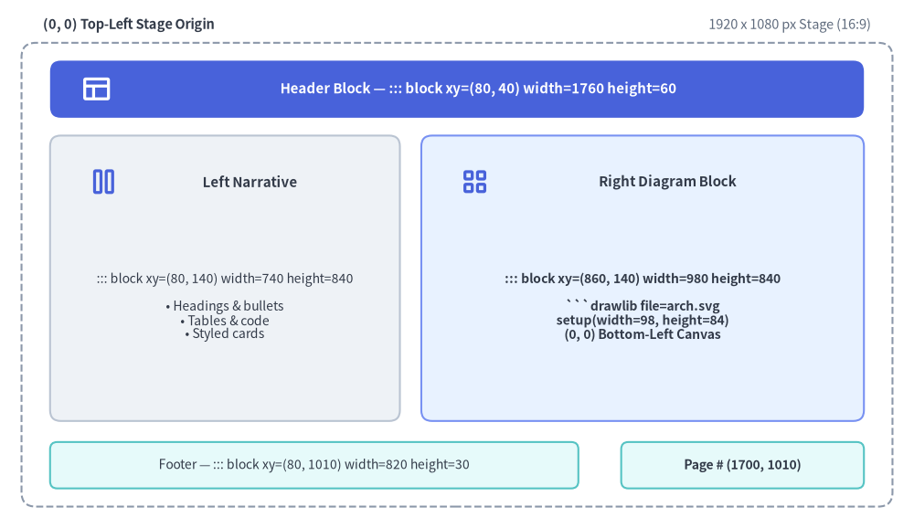
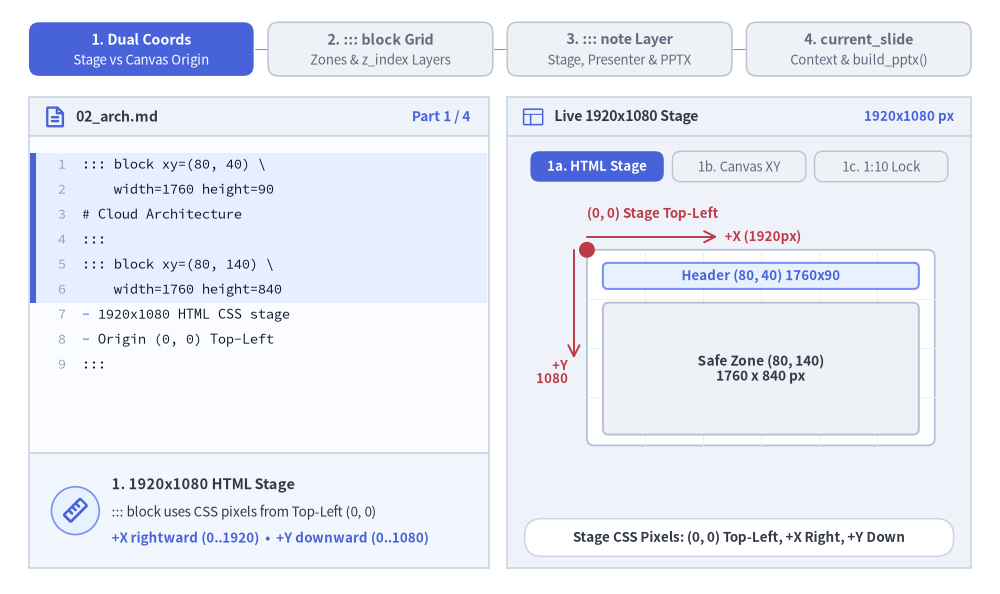
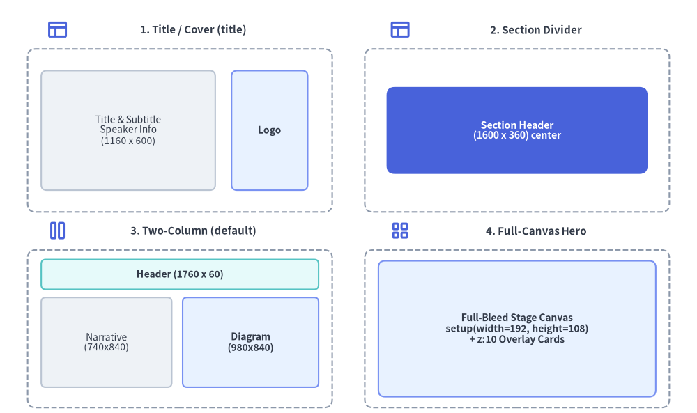

Slide Stage Layout & API
When authoring 16:9 widescreen presentation decks (drawlib init slide), Drawlib provides a precision 1920 × 1080 pixel virtual stage (::: block, ::: note), built-in layout patterns, inline vector SVG font bundling, and the programmatic drawlib.slide Python runtime API (current_slide, SlideContext, BoundingBox, build_slide, build_pptx). (For initializing and building a slide deck project, see Slide Deck Project Guide.)

Source Code
from drawlib.canvas import save, setup
from drawlib.icons import phosphor
from drawlib.shapes import rectangle
from drawlib.styles import Styles
from drawlib.text import text
setup(width=128, height=74)
# Outer 1920x1080 Stage Frame
rectangle((64, 35.5), width=122, height=65, style=Styles.MutedDashed.patch(shape_r=2.0))
text((6, 70.5), "(0, 0) Top-Left Stage Origin", style=Styles.DarkBold.patch(text_size=10.5, halign="left"))
text((122, 70.5), "1920 x 1080 px Stage (16:9)", style=Styles.Muted.patch(text_size=10.5, halign="right"))
# Header Zone: ::: block xy=(80, 40) width=1760 height=60
rectangle((64, 61.5), width=114, height=8.0, style=Styles.PrimaryFlat.patch(shape_r=1.5))
phosphor.layout((13.5, 61.5), width=4.4, style=Styles.WhiteBold)
text((67.0, 61.5), "Header Block — ::: block xy=(80, 40) width=1760 height=60", style=Styles.WhiteBold.patch(text_size=10.8))
# Left Narrative Column: ::: block xy=(80, 140) width=740 height=840
rectangle((31.5, 35.0), width=49, height=40, style=Styles.Neutral.patch(shape_r=1.5))
phosphor.columns((14.5, 48.5), width=4.4, style=Styles.PrimaryBold)
text((35.0, 48.5), "Left Narrative", style=Styles.DarkBold.patch(text_size=10.8))
text(
(31.5, 31.0),
"::: block xy=(80, 140) width=740 height=840\n\n• Headings & bullets\n• Tables & code\n• Styled cards",
style=Styles.Dark.patch(text_size=10.0),
)
# Right Diagram Column: ::: block xy=(860, 140) width=980 height=840
rectangle((90.0, 35.0), width=62, height=40, style=Styles.PrimaryNeutral.patch(shape_r=1.5))
phosphor.squares_four((66.5, 48.5), width=4.4, style=Styles.PrimaryBold)
text((93.5, 48.5), "Right Diagram Block", style=Styles.DarkBold.patch(text_size=10.8))
text(
(90.0, 31.0),
"::: block xy=(860, 140) width=980 height=840\n\n```drawlib file=arch.svg\nsetup(width=98, height=84)\n(0, 0) Bottom-Left Canvas",
style=Styles.DarkBold.patch(text_size=10.0),
)
# Footer & Page Counter Blocks
rectangle(
(44, 8.8),
width=74,
height=6.5,
style=Styles.SecondaryNeutral.patch(shape_r=1.0),
text="Footer — ::: block xy=(80, 1010) width=820 height=30",
text_style=Styles.Dark.patch(text_size=10.0),
)
rectangle(
(104, 8.8),
width=34,
height=6.5,
style=Styles.SecondaryNeutral.patch(shape_r=1.0),
text="Page # (1700, 1010)",
text_style=Styles.DarkBold.patch(text_size=10.0),
)
save()
1. Interactive Stage Geometry & API Tour
Every slide combines a Top-Left 1920 × 1080 HTML stage (::: block xy=(x, y) width=W height=H and z_index layers) with Bottom-Left Cartesian drawlib canvases, hidden ::: note presenter scripts (rendered in ?presenter=1 and native PowerPoint .pptx speaker notes), and the drawlib.slide Python runtime (current_slide, BoundingBox, build_slide, build_pptx):

Source Code
from __future__ import annotations
from drawlib.anim import Animation
from drawlib.canvas import save, setup
from drawlib.icons import code as code_icons
from drawlib.icons import phosphor, workspace
from drawlib.lines import line
from drawlib.shapes import circle, rectangle
from drawlib.smartarts import SourceCode, SourceCodeStyles
from drawlib.styles import Styles
from drawlib.text import text
W, H = 138.0, 82.0
setup(width=W, height=H)
anim = Animation(fps=10.0, loop=0)
CODE_TEXT_SIZE = 10.0
PT_TO_CANVAS = W / 720.0
FONT_CANVAS = CODE_TEXT_SIZE * PT_TO_CANVAS
LINE_H = FONT_CANVAS * 1.8
PAD_Y = FONT_CANVAS * 1.2
CODE_STYLES = SourceCodeStyles.get("default", font_lang="en", text_size=CODE_TEXT_SIZE).patch(
box_style=Styles.Neutral.patch(shape_fill_color=(0, 0, 0, 0), shape_line_width=0),
)
PANE_HEADER = Styles.Neutral.patch(
shape_fill_color=(238, 243, 250),
shape_line_color=(203, 213, 225),
shape_line_width=1.2,
shape_r=0.0,
)
EDITOR_BODY = Styles.Neutral.patch(
shape_fill_color=(250, 252, 255),
shape_line_color=(203, 213, 225),
shape_line_width=1.2,
shape_r=0.0,
)
TAKEAWAY_BODY = Styles.Neutral.patch(
shape_fill_color=(242, 246, 253),
shape_line_color=(203, 213, 225),
shape_line_width=1.2,
shape_r=0.0,
)
STUDIO_BODY = Styles.Neutral.patch(
shape_fill_color=(239, 243, 249),
shape_line_color=(203, 213, 225),
shape_line_width=1.2,
shape_r=0.0,
)
STAGE_CARD = Styles.Neutral.patch(
shape_fill_color=(255, 255, 255),
shape_line_color=(180, 194, 214),
shape_line_width=1.3,
shape_r=1.0,
)
PART_ITEMS = [
("1. Dual Coords", "Stage vs Canvas Origin"),
("2. ::: block Grid", "Zones & z_index Layers"),
("3. ::: note Layer", "Stage, Presenter & PPTX"),
("4. current_slide", "Context & build_pptx()"),
]
def draw_step_bar(active_part: int) -> None:
"""Draw top 4-part progress bar (active_part is 1..4)."""
pill_w = 31.0
pill_h = 7.4
gap = 2.0
start_x = 4.0 + pill_w / 2.0
cy = 75.2
for idx, (label, sublabel) in enumerate(PART_ITEMS, start=1):
cx = start_x + (idx - 1) * (pill_w + gap)
if idx > 1:
prev_cx = cx - (pill_w + gap)
line(
(prev_cx + pill_w / 2.0 + 0.2, cy),
(cx - pill_w / 2.0 - 0.2, cy),
style=Styles.PrimaryBold if idx <= active_part else Styles.MutedThin,
)
if idx == active_part:
st = Styles.PrimaryFlat.patch(shape_r=1.4)
tst = Styles.WhiteBold.patch(text_size=10.3)
sub_tst = Styles.White.patch(text_size=9.5)
elif idx < active_part:
st = Styles.PrimaryNeutral.patch(shape_r=1.4, shape_line_width=1.1)
tst = Styles.PrimaryBold.patch(text_size=10.3)
sub_tst = Styles.Primary.patch(text_size=9.5)
else:
st = Styles.Neutral.patch(shape_r=1.4, shape_line_width=1.1)
tst = Styles.MutedBold.patch(text_size=10.3)
sub_tst = Styles.Muted.patch(text_size=9.5)
rectangle((cx, cy), width=pill_w, height=pill_h, style=st)
text((cx, cy + 1.35), label, style=tst)
text((cx, cy - 1.55), sublabel, style=sub_tst)
def draw_left_pane(
active_part: int,
file_label: str,
code_lang: str,
code_lines: list[str],
hl_range: tuple[int, int],
icon_fn: object,
summary_title: str,
summary_line1: str,
summary_line2: str,
) -> None:
"""Draw left Markdown/Python editor + bottom concept takeaway card."""
x0, w = 4.0, 63.5
cx = x0 + w / 2.0
top_y = 63.2
header_h = 5.4
editor_h = 43.8
takeaway_h = 15.8
rectangle((cx, top_y + header_h / 2.0), width=w, height=header_h, style=PANE_HEADER)
if code_lang == "python":
code_icons.python((x0 + 3.6, top_y + header_h / 2.0), width=3.4, style=Styles.Neutral)
elif code_lang == "bash":
code_icons.bash((x0 + 3.6, top_y + header_h / 2.0), width=3.4, style=Styles.Neutral)
else:
phosphor.file_text((x0 + 3.6, top_y + header_h / 2.0), width=3.4, style=Styles.PrimaryBold)
text(
(x0 + 6.5, top_y + header_h / 2.0),
file_label,
style=Styles.DarkBold.patch(text_size=10.2, halign="left"),
)
text(
(x0 + w - 2.6, top_y + header_h / 2.0),
f"Part {active_part} / 4",
style=Styles.PrimaryBold.patch(text_size=9.8, halign="right"),
)
rectangle((cx, top_y - editor_h / 2.0), width=w, height=editor_h, style=EDITOR_BODY)
hl_start, hl_end = hl_range
hl_top = top_y - PAD_Y - hl_start * LINE_H
hl_bot = top_y - PAD_Y - (hl_end + 1) * LINE_H
hl_cy = (hl_top + hl_bot) / 2.0
hl_h = hl_top - hl_bot
rectangle(
(cx, hl_cy),
width=w - 0.6,
height=hl_h,
style=Styles.Neutral.patch(shape_fill_color=(229, 239, 255), shape_line_width=0),
)
rectangle(
(x0 + 0.55, hl_cy),
width=0.9,
height=hl_h,
style=Styles.PrimaryFlat.patch(shape_line_width=0),
)
SourceCode.draw(
xy=(x0, top_y),
width=w,
code="\n".join(code_lines),
styles=CODE_STYLES,
code_lang=code_lang,
show_linenum=True,
align="top_left",
)
take_cy = 3.6 + takeaway_h / 2.0
rectangle((cx, take_cy), width=w, height=takeaway_h, style=TAKEAWAY_BODY)
circle(
(x0 + 6.4, take_cy),
radius=3.3,
style=Styles.PrimaryNeutral.patch(shape_line_width=1.2),
)
icon_fn((x0 + 6.4, take_cy), width=3.8, style=Styles.PrimaryBold) # type: ignore[operator]
text(
(x0 + 11.4, take_cy + 3.6),
summary_title,
style=Styles.DarkBold.patch(text_size=10.4, halign="left"),
)
text(
(x0 + 11.4, take_cy - 0.2),
summary_line1,
style=Styles.Dark.patch(text_size=9.7, halign="left"),
)
text(
(x0 + 11.4, take_cy - 3.8),
summary_line2,
style=Styles.PrimaryBold.patch(text_size=9.6, halign="left"),
)
def draw_stage_studio(param_badge: str, footer_caption: str) -> float:
"""Draw right 1920x1080 stage preview shell and footer."""
x0, w = 70.0, 64.0
cx = x0 + w / 2.0
top_y = 63.2
header_h = 5.4
body_h = 59.6
rectangle((cx, top_y + header_h / 2.0), width=w, height=header_h, style=PANE_HEADER)
phosphor.layout((x0 + 3.6, top_y + header_h / 2.0), width=3.4, style=Styles.Primary)
text(
(x0 + 6.5, top_y + header_h / 2.0),
"Live 1920x1080 Stage",
style=Styles.DarkBold.patch(text_size=10.2, halign="left"),
)
text(
(x0 + w - 2.4, top_y + header_h / 2.0),
param_badge,
style=Styles.PrimaryBold.patch(text_size=9.6, halign="right"),
)
rectangle((cx, 3.6 + body_h / 2.0), width=w, height=body_h, style=STUDIO_BODY)
rectangle(
(cx, 7.8),
width=59.2,
height=5.2,
style=Styles.Neutral.patch(
shape_fill_color=(255, 255, 255),
shape_line_color=(203, 213, 225),
shape_line_width=1.1,
shape_r=2.4,
),
text=footer_caption,
text_style=Styles.DarkBold.patch(text_size=9.7),
)
return cx
def draw_sub_pills(scx: float, labels: list[str], active_idx: int) -> None:
"""Draw 3-step tracker pills near the top of the right studio pane."""
pw, ph, pgap = 18.4, 4.2, 1.2
p_start = scx - (3 * pw + 2 * pgap) / 2.0 + pw / 2.0
for idx, lbl in enumerate(labels):
px = p_start + idx * (pw + pgap)
if idx == active_idx:
pst = Styles.PrimaryFlat.patch(shape_r=1.2)
ptst = Styles.WhiteBold.patch(text_size=9.5)
elif idx < active_idx:
pst = Styles.PrimaryNeutral.patch(shape_r=1.2, shape_line_width=1.0)
ptst = Styles.PrimaryBold.patch(text_size=9.5)
else:
pst = Styles.Neutral.patch(shape_r=1.2, shape_line_width=1.0)
ptst = Styles.Muted.patch(text_size=9.5)
rectangle((px, 59.0), width=pw, height=ph, style=pst, text=lbl, text_style=ptst)
def draw_grid_sheet(cx: float, cy: float, sw: float, sh: float) -> tuple[float, float]:
"""Draw a crisp 16:9 stage card with subtle alignment grid; returns (sx0, sy0)."""
sx0, sy0 = cx - sw / 2.0, cy - sh / 2.0
rectangle((cx, cy), width=sw, height=sh, style=STAGE_CARD)
g_st = Styles.MutedThin.patch(line_color=(234, 240, 248), line_width=0.7)
for gx in range(1, 6):
vx = sx0 + gx * (sw / 6.0)
line((vx, sy0), (vx, sy0 + sh), style=g_st)
for gy in range(1, 4):
vy = sy0 + gy * (sh / 4.0)
line((sx0, vy), (sx0 + sw, vy), style=g_st)
return sx0, sy0
FENCE = "`" * 3
# =========================================================================
# Part 1: Dual Coords — HTML Stage Top-Left vs. Drawlib Canvas Bottom-Left
# =========================================================================
PART1_STATES = [
(
"1a",
3.3,
"02_arch.md",
"markdown",
[
"::: block xy=(80, 40) \\",
" width=1760 height=90",
"# Cloud Architecture",
":::",
"::: block xy=(80, 140) \\",
" width=1760 height=840",
"- 1920x1080 HTML CSS stage",
"- Origin (0, 0) Top-Left",
":::",
],
(0, 5),
"1920x1080 px",
"Stage CSS Pixels: (0, 0) Top-Left, +X Right, +Y Down",
"1. 1920x1080 HTML Stage",
"::: block uses CSS pixels from Top-Left (0, 0)",
"+X rightward (0..1920) • +Y downward (0..1080)",
),
(
"1b",
3.3,
"02_arch.md",
"python",
[
f"# Inside {FENCE}drawlib block:",
"from drawlib.canvas import (",
" save, setup,",
")",
"setup(width=98, height=84)",
"# (0, 0) at Bottom-Left!",
"# +X right (0..98)",
"# +Y up (0..84)",
"rectangle((49, 42), 60, 40)",
"save()",
],
(4, 7),
"Canvas (0, 0)",
"Inner Drawlib Canvas: (0, 0) Bottom-Left (+Y Up)",
"2. Cartesian Drawlib Canvas",
"setup(width, height) puts (0, 0) at Bottom-Left",
"+X rightward (0..W) • +Y upward (0..H)",
),
(
"1c",
3.5,
"02_arch.md",
"markdown",
[
"::: block xy=(860, 140) \\",
" width=980 height=840",
f"{FENCE}drawlib file=arch.svg",
"# 980:840 == 98:84 (1:10!)",
"setup(width=98, height=84)",
"# Fills block 100% cleanly",
"save()",
FENCE,
":::",
],
(0, 4),
"1:10 Lock",
"Divide Block px by 10: 980x840 -> setup(98, 84)",
"3. 1:10 Aspect-Ratio Lock",
"Match setup(W, H) ratio to block width & height",
"980x840 block + setup(98, 84) = zero letterbox",
),
]
for p1_idx, (m1, dur, flbl, clang, code_1, hl_rng, badge, foot, st_t, s_1, s_2) in enumerate(PART1_STATES):
with anim.frame(duration=dur):
draw_step_bar(1)
draw_left_pane(1, flbl, clang, code_1, hl_rng, phosphor.ruler, st_t, s_1, s_2)
scx = draw_stage_studio(badge, foot)
draw_sub_pills(scx, ["1a. HTML Stage", "1b. Canvas XY", "1c. 1:10 Lock"], p1_idx)
if m1 == "1a":
sw, sh = 48.0, 27.0
sx0, sy0 = draw_grid_sheet(105.0, 34.0, sw, sh)
sy1 = sy0 + sh
# Top-Left (0, 0) stage axes
line((sx0, sy1 + 1.8), (sx0 + 18.0, sy1 + 1.8), arrow_head="->", style=Styles.DangerBold.patch(line_width=1.4))
text((sx0 + 19.0, sy1 + 1.8), "+X (1920px)", style=Styles.DangerBold.patch(text_size=9.5, halign="left"))
line((sx0 - 1.8, sy1), (sx0 - 1.8, sy1 - 15.0), arrow_head="->", style=Styles.DangerBold.patch(line_width=1.4))
text((sx0 - 2.6, sy1 - 16.8), "+Y\n1080", style=Styles.DangerBold.patch(text_size=9.5, halign="right"))
circle((sx0, sy1), radius=1.1, style=Styles.DangerFlat)
text((sx0, sy1 + 5.0), "(0, 0) Stage Top-Left", style=Styles.DangerBold.patch(text_size=9.6, halign="left"))
# Safe content zones inside stage
rectangle(
(105.0, sy1 - 3.6),
width=43.6,
height=3.6,
style=Styles.PrimaryNeutral.patch(shape_r=0.7),
text="Header (80, 40) 1760x90",
text_style=Styles.PrimaryBold.patch(text_size=9.5),
)
rectangle(
(105.0, sy0 + 10.6),
width=43.6,
height=18.2,
style=Styles.Neutral.patch(shape_r=0.8),
text="Safe Zone (80, 140)\n1760 x 840 px",
text_style=Styles.DarkBold.patch(text_size=9.8),
)
elif m1 == "1b":
sw, sh = 50.0, 28.0
sx0, sy0 = draw_grid_sheet(103.5, 35.2, sw, sh)
text((sx0 + 1.5, sy0 + sh - 2.0), "Stage (0,0)", style=Styles.Muted.patch(text_size=9.5, halign="left"))
rectangle(
(sx0 + 11.2, sy0 + 13.0),
width=18.0,
height=20.0,
style=Styles.Neutral.patch(shape_r=0.8),
text="Markdown\n740x840",
text_style=Styles.Muted.patch(text_size=9.5),
)
# Highlighted inner Drawlib Canvas block
cx_in, cy_in, cw, ch = sx0 + 35.0, sy0 + 13.0, 25.0, 20.0
ix0, iy0 = cx_in - cw / 2.0, cy_in - ch / 2.0
rectangle(
(cx_in, cy_in),
width=cw,
height=ch,
style=Styles.PrimaryNeutral.patch(shape_r=0.8, shape_line_width=1.5),
)
rectangle((cx_in + 1.6, cy_in - 0.6), width=16.8, height=6.6, style=Styles.White.patch(shape_r=0.8), text="98 x 84 Canvas", text_style=Styles.DarkBold.patch(text_size=9.5))
line((ix0, iy0), (ix0, iy0 + 14.2), arrow_head="->", style=Styles.PrimaryBold.patch(line_width=1.5))
text((ix0 + 1.0, iy0 + 16.0), "+Y (84)", style=Styles.PrimaryBold.patch(text_size=9.5, halign="left"))
line((ix0, iy0), (ix0 + 15.5, iy0), arrow_head="->", style=Styles.PrimaryBold.patch(line_width=1.5))
text((ix0 + 16.2, iy0 + 1.6), "+X", style=Styles.PrimaryBold.patch(text_size=9.5, halign="left"))
circle((ix0, iy0), radius=1.1, style=Styles.PrimaryFlat)
text((scx, 15.4), "(0, 0) Bottom-Left Cartesian Origin (+Y Up)", style=Styles.PrimaryBold.patch(text_size=9.6))
else:
# 1c: Side-by-side Mismatch vs 1:10 Lock
lx, rx, cy_card = 86.2, 117.6, 35.5
# Left card: Mismatched aspect ratio (letterbox bars)
rectangle((lx, cy_card), width=26.5, height=25.0, style=Styles.Neutral.patch(shape_r=1.0))
text((lx, cy_card + 9.6), "Mismatch 100x40", style=Styles.MutedBold.patch(text_size=9.5))
rectangle((lx, cy_card + 4.8), width=23.5, height=3.2, style=Styles.SecondaryNeutral.patch(shape_line_width=0))
rectangle((lx, cy_card - 0.5), width=23.5, height=7.4, style=Styles.White.patch(shape_r=0.6), text="Shrunk SVG", text_style=Styles.Dark.patch(text_size=9.5))
rectangle((lx, cy_card - 5.8), width=23.5, height=3.2, style=Styles.SecondaryNeutral.patch(shape_line_width=0))
text((lx, cy_card - 9.8), "Letterbox Gap", style=Styles.MutedBold.patch(text_size=9.5))
# Right card: 1:10 Lock (zero letterbox!)
rectangle((rx, cy_card), width=26.5, height=25.0, style=Styles.PrimaryNeutral.patch(shape_r=1.0, shape_line_width=1.5))
text((rx, cy_card + 9.6), "Lock 98x84 (1:10)", style=Styles.PrimaryBold.patch(text_size=9.5))
rectangle(
(rx, cy_card - 0.5),
width=23.5,
height=13.8,
style=Styles.White.patch(shape_r=0.8, shape_line_color=(59, 130, 246), shape_line_width=1.3),
text="980x840 px\n==\nsetup(98, 84)",
text_style=Styles.DarkBold.patch(text_size=9.6),
)
phosphor.check_circle((rx - 8.2, cy_card - 9.8), width=3.2, style=Styles.PrimaryBold)
text((rx + 1.4, cy_card - 9.8), "100% Fit!", style=Styles.PrimaryBold.patch(text_size=9.6))
text((scx, 16.0), "Golden Rule: setup(block_w / 10, block_h / 10)", style=Styles.DarkBold.patch(text_size=9.6))
# =========================================================================
# Part 2: ::: block Grid — Header/Left Card, Right Hero & z_index Layers
# =========================================================================
PART2_STATES = [
(
"2a",
3.3,
"02_arch.md",
"markdown",
[
"::: block xy=(80, 40) \\",
" width=1760 height=90",
"# Service Mesh Topology",
":::",
"::: block xy=(80, 140) \\",
" width=740 height=840 \\",
' class="card panel"',
"## Key Decisions",
"- mTLS east-west zero trust",
":::",
],
(4, 9),
"Header + Card",
"Header (80, 40) + Left Card (80, 140) 740x840",
"1. Header & Narrative Card",
"Header spans (80, 40) width=1760 height=90",
'class="card panel" styles Left 740x840 prose box',
),
(
"2b",
3.3,
"02_arch.md",
"markdown",
[
"# 80 + 740 + 40 gutter = 860",
"::: block xy=(860, 140) \\",
" width=980 height=840",
f"{FENCE}drawlib file=mesh.svg",
"setup(width=98, height=84)",
"# Right Hero vector canvas",
"d.draw(xy=(6, 8))",
"save()",
FENCE,
":::",
],
(0, 4),
"40px Gutter",
"80px Margin + 740px + 40px Gutter + 980px + 80px = 1920",
"2. Two-Column Precision Grid",
"80px outer stage margin + 40px center gutter",
"Right Hero (860, 140) 980x840 holds SVG diagram",
),
(
"2c",
3.5,
"02_arch.md",
"markdown",
[
"::: block xy=(0, 0) z_index=0 \\",
" width=1920 height=1080",
f"{FENCE}drawlib file=hero_bg.svg",
"setup(width=192, height=108)",
FENCE,
":::",
"::: block xy=(1180, 160) \\",
" width=640 height=320 \\",
' z_index=10 class="card"',
"**99.99% SLA** Overlay Card",
":::",
],
(6, 10),
"z_index=0..10",
"Stack Overlapping Stage Blocks Cleanly via z_index",
"3. Multi-Layer z_index Stacking",
"z_index=0 renders full-bleed 1920x1080 backdrop",
"z_index=10 floats KPI callout card above canvas",
),
]
for p2_idx, (m2, dur, flbl, clang, code_2, hl_rng, badge, foot, st_t, s_1, s_2) in enumerate(PART2_STATES):
with anim.frame(duration=dur):
draw_step_bar(2)
draw_left_pane(2, flbl, clang, code_2, hl_rng, phosphor.columns, st_t, s_1, s_2)
scx = draw_stage_studio(badge, foot)
draw_sub_pills(scx, ["2a. Header+Card", "2b. Right Hero", "2c. z_index"], p2_idx)
sw, sh = 52.0, 29.25
sx0, sy0 = draw_grid_sheet(scx, 35.8, sw, sh)
sy1 = sy0 + sh
if m2 == "2a":
rectangle(
(scx, sy1 - 3.6),
width=47.6,
height=4.0,
style=Styles.PrimaryFlat.patch(shape_r=0.8),
text="Header (80, 40) 1760x90",
text_style=Styles.WhiteBold.patch(text_size=9.5),
)
rectangle(
(sx0 + 12.2, sy0 + 11.2),
width=20.0,
height=19.8,
style=Styles.PrimaryNeutral.patch(shape_r=1.0, shape_line_width=1.4),
text='Left Narrative\n(80, 140)\n740 x 840\nclass="card"',
text_style=Styles.DarkBold.patch(text_size=9.5),
)
rectangle(
(sx0 + 36.8, sy0 + 11.2),
width=26.8,
height=19.8,
style=Styles.MutedDashed.patch(shape_r=1.0),
text="(Right Slot)",
text_style=Styles.Muted.patch(text_size=9.5),
)
text((scx, 15.6), 'Styled Markdown containers via class="card panel"', style=Styles.DarkBold.patch(text_size=9.6))
elif m2 == "2b":
rectangle(
(scx, sy1 - 3.6),
width=47.6,
height=4.0,
style=Styles.SecondaryNeutral.patch(shape_r=0.8),
text="Header (80, 40) 1760x90",
text_style=Styles.DarkBold.patch(text_size=9.5),
)
rectangle(
(sx0 + 11.8, sy0 + 11.2),
width=19.2,
height=19.8,
style=Styles.Neutral.patch(shape_r=1.0),
text="Left Card\n740 x 840",
text_style=Styles.Dark.patch(text_size=9.5),
)
rectangle(
(sx0 + 36.8, sy0 + 11.2),
width=26.8,
height=19.8,
style=Styles.PrimaryNeutral.patch(shape_r=1.0, shape_line_width=1.6),
)
text((sx0 + 36.8, sy0 + 17.6), "Right Hero (860, 140)", style=Styles.PrimaryBold.patch(text_size=9.6))
rectangle((sx0 + 30.0, sy0 + 9.8), width=9.2, height=7.2, style=Styles.White.patch(shape_r=0.8), text="Mesh", text_style=Styles.DarkBold.patch(text_size=9.5))
rectangle((sx0 + 43.6, sy0 + 9.8), width=9.2, height=7.2, style=Styles.PrimaryFlat.patch(shape_r=0.8), text="Envoy", text_style=Styles.WhiteBold.patch(text_size=9.5))
line((sx0 + 34.7, sy0 + 9.8), (sx0 + 38.9, sy0 + 9.8), arrow_head="->", style=Styles.PrimaryBold)
text((sx0 + 36.8, sy0 + 3.4), "980 x 840 px", style=Styles.DarkBold.patch(text_size=9.5))
text((scx, 15.6), "80px Margin | 740px | 40px Gutter | 980px | 80px", style=Styles.PrimaryBold.patch(text_size=9.5))
else:
# 2c: Full-bleed z_index=0 + floating z_index=10 card
rectangle(
(scx, 35.8),
width=sw,
height=sh,
style=Styles.SecondaryNeutral.patch(shape_r=1.0, shape_line_width=1.3),
)
text((sx0 + 2.2, sy1 - 2.8), "z_index=0 Full-Bleed (0, 0) 1920x1080", style=Styles.DarkBold.patch(text_size=9.5, halign="left"))
# Background topology nodes
rectangle((sx0 + 12.0, sy0 + 11.0), width=14.0, height=8.5, style=Styles.White.patch(shape_r=0.8), text="Edge", text_style=Styles.DarkBold.patch(text_size=9.5))
rectangle((sx0 + 30.0, sy0 + 11.0), width=14.0, height=8.5, style=Styles.Neutral.patch(shape_r=0.8), text="Core", text_style=Styles.DarkBold.patch(text_size=9.5))
line((sx0 + 19.0, sy0 + 11.0), (sx0 + 23.0, sy0 + 11.0), arrow_head="->", style=Styles.DarkBold)
# Floating z_index=10 card with subtle offset shadow
ocx, ocy = sx0 + 37.8, sy0 + 18.2
rectangle((ocx + 0.8, ocy - 0.8), width=22.4, height=11.6, style=Styles.Neutral.patch(shape_fill_color=(185, 198, 218), shape_line_width=0, shape_r=1.2))
rectangle(
(ocx, ocy),
width=22.4,
height=11.6,
style=Styles.PrimaryFlat.patch(shape_r=1.2),
text="z_index=10 Card\n99.99% SLA",
text_style=Styles.WhiteBold.patch(text_size=9.7),
)
text((scx, 15.6), "z_index=10 floats KPI callout cleanly over z_index=0", style=Styles.PrimaryBold.patch(text_size=9.5))
# =========================================================================
# Part 3: ::: note Layer — Audience Stage, Presenter View & Native PPTX
# =========================================================================
PART3_STATES = [
(
"3a",
3.3,
"02_arch.md",
"markdown",
[
"::: block xy=(80, 140) \\",
" width=1760 height=840",
"## Zero-Downtime Failover",
":::",
"::: note",
"- Explain Raft quorum (2/3)",
"- Mention <1ms SQLite cache",
"- Pause for Q&A before Demo",
":::",
],
(4, 8),
"Audience View",
"Audience Stage Stays Visual — ::: note Hidden From Screen",
"1. Dual-Layer Audience Stage",
"::: block renders clean visuals for the audience",
"::: note compiles to hidden <aside> (never clutters)",
),
(
"3b",
3.3,
"serve_deck.sh",
"bash",
[
"# Launch Live Slide Server:",
"drawlib serve slide_html",
"# Open ?presenter=1 (or 'P'):",
"# - Synced Audience window",
"# - Current & Next preview",
"# - Elapsed timer (04:18)",
"# - Rendered ::: note HTML!",
"# Zero notes shown on stage",
],
(2, 6),
"?presenter=1",
"Presenter View (?presenter=1): Live Notes, Timer & Next",
"2. Synchronized Presenter View",
"Press P or open ?presenter=1 for speaker cockpit",
"Shows formatted ::: note script, timer & next slide",
),
(
"3c",
3.5,
"export_pptx.sh",
"bash",
[
"# Export native 16:9 .pptx:",
"drawlib build pptx slide_src \\",
" -o deck.pptx --dpi 240",
"",
"# Native PowerPoint output:",
"# - Editable ::: block boxes",
"# - 240 DPI crisp PNGs",
"# - ::: note -> PPTX Notes!",
],
(1, 7),
"build pptx",
"drawlib build pptx Maps ::: note to Native PPTX Notes",
"3. Native PowerPoint Speaker Notes",
"drawlib build pptx exports editable 16:9 .pptx",
"::: note Markdown maps into PowerPoint Notes pane",
),
]
for p3_idx, (m3, dur, flbl, clang, code_3, hl_rng, badge, foot, st_t, s_1, s_2) in enumerate(PART3_STATES):
with anim.frame(duration=dur):
draw_step_bar(3)
draw_left_pane(3, flbl, clang, code_3, hl_rng, phosphor.clipboard_text, st_t, s_1, s_2)
scx = draw_stage_studio(badge, foot)
draw_sub_pills(scx, ["3a. Audience", "3b. Presenter", "3c. Native PPTX"], p3_idx)
if m3 == "3a":
sw, sh = 52.0, 27.5
sx0, sy0 = draw_grid_sheet(scx, 37.5, sw, sh)
text((scx, sy0 + sh - 3.6), "Zero-Downtime Failover", style=Styles.DarkBold.patch(text_size=10.2))
rectangle((sx0 + 9.4, sy0 + 11.2), width=11.8, height=9.5, style=Styles.PrimaryFlat.patch(shape_r=1.0), text="Leader", text_style=Styles.WhiteBold.patch(text_size=9.6))
rectangle((sx0 + 26.0, sy0 + 11.2), width=11.8, height=9.5, style=Styles.PrimaryNeutral.patch(shape_r=1.0), text="Quorum", text_style=Styles.DarkBold.patch(text_size=9.6))
rectangle((sx0 + 42.6, sy0 + 11.2), width=11.8, height=9.5, style=Styles.Neutral.patch(shape_r=1.0), text="Replica", text_style=Styles.DarkBold.patch(text_size=9.6))
line((sx0 + 15.4, sy0 + 11.2), (sx0 + 20.0, sy0 + 11.2), arrow_head="->", style=Styles.DarkBold)
line((sx0 + 32.0, sy0 + 11.2), (sx0 + 36.6, sy0 + 11.2), arrow_head="->", style=Styles.DarkBold)
rectangle((scx, 17.6), width=52.0, height=6.4, style=Styles.SecondaryNeutral.patch(shape_r=1.2))
phosphor.eye_slash((scx - 21.5, 17.6), width=3.4, style=Styles.PrimaryBold)
text((scx + 2.2, 17.6), "::: note hidden from audience projector", style=Styles.DarkBold.patch(text_size=9.5))
elif m3 == "3b":
# Presenter View split cockpit
rectangle((scx, 34.8), width=55.0, height=35.5, style=STAGE_CARD)
rectangle(
(scx, 50.2),
width=55.0,
height=4.6,
style=Styles.SecondaryNeutral.patch(shape_r=0.6),
)
text((77.2, 50.2), "Presenter View (?presenter=1)", style=Styles.DarkBold.patch(text_size=9.6, halign="left"))
text((127.4, 50.2), "04:18", style=Styles.PrimaryBold.patch(text_size=9.6, halign="right"))
# Left column: Current + Next slide previews
rectangle((86.2, 40.4), width=20.6, height=11.4, style=Styles.Neutral.patch(shape_r=0.8), text="Current Slide\n(2 / 8)", text_style=Styles.DarkBold.patch(text_size=9.5))
rectangle((86.2, 25.8), width=20.6, height=11.4, style=Styles.SecondaryNeutral.patch(shape_r=0.8), text="Next Slide\n(3 / 8)", text_style=Styles.MutedBold.patch(text_size=9.5))
# Right column: Highlighted ::: note Speaker Script
rectangle((113.8, 33.1), width=29.8, height=26.0, style=Styles.PrimaryNeutral.patch(shape_r=1.0, shape_line_width=1.4))
rectangle((113.8, 43.4), width=29.8, height=5.2, style=Styles.PrimaryFlat.patch(shape_r=0.8), text="Speaker Notes (::: note)", text_style=Styles.WhiteBold.patch(text_size=9.5))
text(
(100.8, 30.8),
"• Raft quorum (2/3)\n• <1ms SQLite cache\n• Pause for Q&A",
style=Styles.DarkBold.patch(text_size=9.5, halign="left"),
)
else:
# 3c: Native PowerPoint .pptx export with workspace.powerpoint icon
rectangle((scx, 34.8), width=55.0, height=35.5, style=STAGE_CARD)
rectangle((scx, 50.2), width=55.0, height=4.8, style=Styles.SecondaryNeutral.patch(shape_r=0.6))
workspace.powerpoint((78.2, 50.2), width=3.6, style=Styles.Primary)
text((81.4, 50.2), "deck.pptx — Native 16:9 PowerPoint", style=Styles.DarkBold.patch(text_size=9.6, halign="left"))
# Upper editable slide region
rectangle(
(scx, 39.2),
width=50.6,
height=14.0,
style=Styles.Neutral.patch(shape_r=0.8),
text="Editable PPTX Shapes + 240 DPI Diagram",
text_style=Styles.DarkBold.patch(text_size=9.6),
)
# Lower PowerPoint Speaker Notes pane
rectangle(
(scx, 24.4),
width=50.6,
height=11.6,
style=Styles.PrimaryNeutral.patch(shape_r=0.8, shape_line_width=1.5),
)
text((79.0, 27.6), "PPTX Speaker Notes (from ::: note):", style=Styles.PrimaryBold.patch(text_size=9.5, halign="left"))
text((79.0, 22.2), "• Raft quorum (2/3) • <1ms SQLite cache", style=Styles.Dark.patch(text_size=9.5, halign="left"))
# =========================================================================
# Part 4: current_slide — Live Counter, BoundingBox & Headless Compiler API
# =========================================================================
PART4_STATES = [
(
"4a",
3.3,
"drawlib.slide",
"python",
[
"from drawlib.slide import (",
" current_slide,",
" draw_page_number,",
")",
"# Bound per slide (1..N):",
"i = current_slide.index # 2",
"n = current_slide.total # 8",
"s = current_slide.text",
"# Bottom-right (1700, 1010):",
'draw_page_number() # "2 / 8"',
],
(5, 9),
"current_slide",
"current_slide (.index, .total, .text) Auto-Updates Badge",
"1. Dynamic current_slide Proxy",
"contextvars binds SlideContext(index, total) per slide",
'draw_page_number() renders "2 / 8" automatically',
),
(
"4b",
3.3,
"drawlib.slide",
"python",
[
"from drawlib.slide import (",
" BoundingBox,",
" draw_section_header,",
")",
"box = BoundingBox(",
" x=860, y=140,",
" width=980, height=840,",
")",
"ar = box.width / box.height",
"setup(box.width / 10, 84)",
],
(4, 9),
"BoundingBox",
"BoundingBox(x, y, width, height) Models Stage Geometry",
"2. Stage BoundingBox & Helpers",
"BoundingBox models (x, y, width, height) stage px",
"Computes exact aspect ratio & canvas dimensions",
),
(
"4c",
3.5,
"drawlib.slide",
"python",
[
"from drawlib.slide import (",
" build_pptx, build_slide,",
")",
"build_slide(",
' input_dir="slide_src",',
' output_dir="slide_html",',
")",
"build_pptx(",
' input_dir="slide_src",',
' output_file="deck.pptx",',
")",
],
(3, 10),
"build_slide/pptx",
"Headless Python API Compiles Both HTML & Native .pptx",
"3. Programmatic Deck Compilation",
"build_slide() compiles standalone SVG HTML deck",
"build_pptx() exports editable 16:9 MS PowerPoint",
),
]
for p4_idx, (m4, dur, flbl, clang, code_4, hl_rng, badge, foot, st_t, s_1, s_2) in enumerate(PART4_STATES):
with anim.frame(duration=dur):
draw_step_bar(4)
draw_left_pane(4, flbl, clang, code_4, hl_rng, phosphor.gear_six, st_t, s_1, s_2)
scx = draw_stage_studio(badge, foot)
draw_sub_pills(scx, ["4a. Slide Badge", "4b. BoundingBox", "4c. Compiler API"], p4_idx)
if m4 == "4a":
sw, sh = 50.0, 26.0
sx0, sy0 = draw_grid_sheet(scx, 39.2, sw, sh)
text((sx0 + 3.0, sy0 + sh - 4.0), "Slide 2: Cloud Topology", style=Styles.DarkBold.patch(text_size=9.8, halign="left"))
rectangle((sx0 + 18.0, sy0 + 11.5), width=26.0, height=10.5, style=Styles.Neutral.patch(shape_r=0.8), text="Diagram Canvas", text_style=Styles.Dark.patch(text_size=9.5))
# Highlighted bottom-right page badge + zoom callout
rectangle(
(sx0 + sw - 7.8, sy0 + 4.4),
width=12.4,
height=5.4,
style=Styles.PrimaryFlat.patch(shape_r=1.2),
text="2 / 8",
text_style=Styles.WhiteBold.patch(text_size=10.2),
)
# Deck strip below showing auto-increment across slides
for idx_s, lbl_s in enumerate(["1 / 8", "2 / 8", "3 / 8"]):
tx = scx + (idx_s - 1) * 17.5
is_cur = idx_s == 1
rectangle(
(tx, 18.5),
width=15.0,
height=6.8,
style=Styles.PrimaryFlat.patch(shape_r=1.0) if is_cur else Styles.Neutral.patch(shape_r=1.0),
text=lbl_s,
text_style=Styles.WhiteBold.patch(text_size=9.6) if is_cur else Styles.MutedBold.patch(text_size=9.5),
)
elif m4 == "4b":
sw, sh = 52.0, 28.5
sx0, sy0 = draw_grid_sheet(scx, 36.2, sw, sh)
# Enclosing ::: block BoundingBox inspector
bx_c, by_c, bw, bh = sx0 + 34.0, sy0 + 13.5, 29.0, 21.0
bx0, by1 = bx_c - bw / 2.0, by_c + bh / 2.0
rectangle(
(bx_c, by_c),
width=bw,
height=bh,
style=Styles.PrimaryNeutral.patch(shape_r=1.0, shape_line_width=1.6),
)
circle((bx0, by1), radius=1.1, style=Styles.PrimaryFlat)
text((bx0 - 1.5, by1), "(860, 140)", style=Styles.PrimaryBold.patch(text_size=9.5, halign="right"))
text((bx_c, by_c + 4.5), "BoundingBox", style=Styles.DarkBold.patch(text_size=10.0))
text((bx_c, by_c - 0.5), "w=980, h=840", style=Styles.Dark.patch(text_size=9.6))
text((bx_c, by_c - 5.5), "ratio = 1.17", style=Styles.PrimaryBold.patch(text_size=9.6))
text((scx, 15.6), "Inspects x, y, width, height & aspect ratio cleanly", style=Styles.DarkBold.patch(text_size=9.5))
else:
# 4c: Headless Python compilation pipeline
rectangle((scx, 35.0), width=55.0, height=34.5, style=STAGE_CARD)
# Left input
rectangle((83.5, 35.0), width=15.6, height=15.0, style=Styles.Neutral.patch(shape_r=1.2))
phosphor.folder_open((83.5, 39.2), width=4.0, style=Styles.PrimaryBold)
text((83.5, 31.8), "slide_src/\n*.md", style=Styles.DarkBold.patch(text_size=9.5))
# Center compiler
rectangle((102.5, 35.0), width=15.6, height=16.5, style=Styles.PrimaryFlat.patch(shape_r=1.4))
code_icons.python((102.5, 39.6), width=4.0, style=Styles.Neutral)
text((102.5, 31.6), "Python\nAPI", style=Styles.WhiteBold.patch(text_size=9.6))
# Right outputs (HTML + PPTX)
rectangle((121.2, 42.6), width=15.8, height=11.5, style=Styles.PrimaryNeutral.patch(shape_r=1.2))
phosphor.globe((116.2, 42.6), width=3.4, style=Styles.PrimaryBold)
text((123.2, 42.6), "HTML\nDeck", style=Styles.DarkBold.patch(text_size=9.5))
rectangle((121.2, 27.4), width=15.8, height=11.5, style=Styles.SecondaryNeutral.patch(shape_r=1.2))
workspace.powerpoint((116.2, 27.4), width=3.4, style=Styles.Primary)
text((123.2, 27.4), "Native\n.pptx", style=Styles.DarkBold.patch(text_size=9.5))
line((91.3, 35.0), (94.7, 35.0), arrow_head="->", style=Styles.DarkBold)
line((110.3, 38.5), (113.3, 42.6), arrow_head="->", style=Styles.PrimaryBold)
line((110.3, 31.5), (113.3, 27.4), arrow_head="->", style=Styles.PrimaryBold)
save()
2. Dual Coordinate Systems: 1920×1080 Stage vs. Drawlib Canvas
Two coordinate systems work together on every slide:
- Slide Stage (
::: block xy=(x, y) width=W height=H) — Top-Left Origin(0, 0):- Every slide renders on a fixed 1920 × 1080 pixel widescreen stage (16:9 aspect ratio) that automatically scales to fit the browser viewport or PDF page.
- Container blocks (
::: block) are positioned in CSS stage pixels where(0, 0)is the top-left corner:xincreases rightward (0→1920).yincreases downward (0→1080).
- Standard Safe Content Zone: Keep primary text and diagrams inside
x: 80..1840(width=1760) andy: 140..980(height=840), reservingy: 40..100for the slide header andy: 1010..1040for the footer and page counter.
- Drawlib Canvas (
drawlibPython block) — Bottom-Left Origin(0, 0):- Inside any
drawlibcode block,setup(width=W, height=H)defines a mathematical Cartesian canvas where(0, 0)is the bottom-left corner:xincreases rightward (0→W).yincreases upward (0→H).
- Inside any
2.1. Golden Rule: Match setup(width, height) Aspect Ratio to Block width & height
Always set setup(width=W, height=H) proportional to the enclosing ::: block xy=(x, y) width=W height=H pixel dimensions (typically dividing pixel width and height by 10 or 20):
Enclosing ::: block Dimensions |
Recommended setup(width, height) |
Aspect Ratio |
|---|---|---|
width=980 height=840 (Right diagram column) |
setup(width=98, height=84) |
98 : 84 |
width=1020 height=840 (Wide right column) |
setup(width=102, height=84) |
102 : 84 |
width=1760 height=840 (Full-width content area) |
setup(width=176, height=84) |
176 : 84 |
width=980 height=1080 (Right half full-bleed) |
setup(width=98, height=108) |
98 : 108 |
width=1920 height=1080 (Full-canvas hero slide) |
setup(width=192, height=108) |
16 : 9 |
3. Stage Container Block Syntax (::: block & ::: note)
Slide Markdown files use pure Markdown without YAML frontmatter (---). Every visual element on a slide is placed inside one or more ::: block containers using Python keyword-argument style (key=value):
::: block xy=(x, y) width=W height=H [options...]
<Markdown content or ```drawlib code fence>
:::
If a slide file contains no ::: block tags at all, Drawlib automatically wraps the slide content in the default content zone ::: block xy=(80, 140) width=1760 height=840. Similarly, if xy, width, or height are omitted on a ::: block header, they default to xy=(80, 140), width=1760, and height=840.
3.1. Complete ::: block Options Reference
| Option Key | Syntax Examples | Compiled CSS / Behavior |
|---|---|---|
Position (xy) |
xy=(80, 140), xy=(0, 0) |
position: absolute; left: 80px; top: 140px; |
Dimensions (width, height) |
width=740 height=840, width=1920 height=1080 |
width: 740px; height: 840px; |
Font Size (font_size) |
font_size=22px, font_size=1.2rem, font_size=18 |
font-size: 22px; (bare numbers automatically append px). |
Compact Density (compact) |
compact=true |
Adds .compact class to <div class="slide-block slide-text-box compact"> for tighter line-height and list spacing. |
Text Alignment (align) |
align=left, align=center, align=right |
text-align: center; |
Layer Depth (z_index) |
z_index=5, z_index=10 |
z-index: 5; — controls foreground/background stacking when blocks overlap. |
Custom CSS Classes (class) |
class="card panel accent border shadow", class=card |
Appends custom utility or theme classes (card, panel, accent, transparent, border, shadow, middle, etc.) to the container <div>. |
Inline CSS Styles (style) |
style="padding: 24px; background: #f8fafc; border-radius: 12px" |
Appends custom inline CSS rules (padding, background, border, etc.) to the container <div>. |
3.2. Speaker Notes (::: note)
Add presenter notes anywhere inside a slide Markdown file using ::: note. Speaker notes are stripped from the visible slide stage, compiled into <aside class="slide-notes" hidden> for the synchronized dual-window Presenter View (P or S key), and exported into native PowerPoint speaker notes during drawlib build pptx / build_pptx():
::: note
- Emphasize that **SQLite hash caching** restores unchanged diagrams in **< 1ms**.
- Press `A` or click **Play Animation** to step through the pipeline animation.
:::
4. Built-In Slide Layout Patterns & Templates

Source Code
from drawlib.canvas import save, setup
from drawlib.icons import phosphor
from drawlib.shapes import rectangle
from drawlib.styles import Styles
from drawlib.text import text
setup(width=128, height=76)
# 1. Top-Left: Title / Cover Slide (title)
phosphor.layout((10.5, 70.5), width=4.0, style=Styles.PrimaryBold)
text((35.5, 70.5), "1. Title / Cover (title)", style=Styles.DarkBold.patch(text_size=10.8))
rectangle((33, 52), width=56, height=30, style=Styles.MutedDashed.patch(shape_r=1.5))
rectangle(
(23.5, 52),
width=32,
height=22,
style=Styles.Neutral.patch(shape_r=1.0),
text="Title & Subtitle\nSpeaker Info\n(1160 x 600)",
text_style=Styles.Dark.patch(text_size=10.0),
)
rectangle(
(49.5, 52),
width=14,
height=22,
style=Styles.PrimaryNeutral.patch(shape_r=1.0),
text="Logo",
text_style=Styles.DarkBold.patch(text_size=10.0),
)
# 2. Top-Right: Section Divider / Closing (section)
phosphor.layout((73.5, 70.5), width=4.0, style=Styles.PrimaryBold)
text((98.5, 70.5), "2. Section Divider", style=Styles.DarkBold.patch(text_size=10.8))
rectangle((95, 52), width=56, height=30, style=Styles.MutedDashed.patch(shape_r=1.5))
rectangle(
(95, 52),
width=48,
height=16,
style=Styles.PrimaryFlat.patch(shape_r=1.5),
text="Section Header\n(1600 x 360) center",
text_style=Styles.WhiteBold.patch(text_size=10.2),
)
# 3. Bottom-Left: Two-Column Split (default)
phosphor.columns((10.5, 33.5), width=4.0, style=Styles.PrimaryBold)
text((35.5, 33.5), "3. Two-Column (default)", style=Styles.DarkBold.patch(text_size=10.8))
rectangle((33, 15.5), width=56, height=29, style=Styles.MutedDashed.patch(shape_r=1.5))
rectangle(
(33, 25.5),
width=51,
height=5.5,
style=Styles.SecondaryNeutral.patch(shape_r=0.8),
text="Header (1760 x 60)",
text_style=Styles.DarkBold.patch(text_size=10.0),
)
rectangle(
(19.5, 13.0),
width=24,
height=16.5,
style=Styles.Neutral.patch(shape_r=0.8),
text="Narrative\n(740x840)",
text_style=Styles.Dark.patch(text_size=10.0),
)
rectangle(
(46.0, 13.0),
width=25,
height=16.5,
style=Styles.PrimaryNeutral.patch(shape_r=0.8),
text="Diagram\n(980x840)",
text_style=Styles.DarkBold.patch(text_size=10.0),
)
# 4. Bottom-Right: Full-Canvas Hero ((0,0)-(1920,1080))
phosphor.squares_four((73.5, 33.5), width=4.0, style=Styles.PrimaryBold)
text((98.5, 33.5), "4. Full-Canvas Hero", style=Styles.DarkBold.patch(text_size=10.8))
rectangle((95, 15.5), width=56, height=29, style=Styles.MutedDashed.patch(shape_r=1.5))
rectangle(
(95, 15.5),
width=51,
height=25,
style=Styles.PrimaryNeutral.patch(shape_r=1.2),
text="Full-Bleed Stage Canvas\nsetup(width=192, height=108)\n+ z:10 Overlay Cards",
text_style=Styles.DarkBold.patch(text_size=10.0),
)
save()
4.1. Title / Cover Slide (title)
Places the main title, subtitle, and speaker metadata on the left and a hero illustration or logo on the right:
::: block xy=(160, 240) width=1160 height=600
# Presentation Title
## Subtitle or Core Value Proposition
Brief one-line summary of the presentation topic
---
**Speaker Name** | Role / Organization
*October 2026*
:::
::: block xy=(1360, 260) width=400 height=480

:::
4.2. Section Header / Chapter Divider Slide (draw_section_header)
Use from drawlib.slide import draw_section_header inside a full-bleed ::: block xy=(0, 0) width=1920 height=1080 block (01_section.md) with one of four layout patterns (variant="split", "centered", "banner", or "minimal"):
::: block xy=(0, 0) width=1920 height=1080
```drawlib file=section_cover.svg
from drawlib.slide import draw_section_header
draw_section_header(
2,
"Distributed Storage Engine",
"Consensus, Replication & Recovery Workflows",
[
"Raft Consensus & Leader Election",
"Quorum Write Path & WAL Durability",
"Automated Shard Rebalancing",
],
total_sections=4,
variant="split",
)
```
:::
4.3. Default Content & Two-Column Split (default)
Combines a standard header ((80, 40) (1760, 60)), footer ((80, 1010) (820, 30)), page counter ((1700, 1010) (140, 30)), left narrative column ((80, 140) (740, 840)), and right diagram column ((860, 140) (980, 840)):
::: block xy=(1700, 1010) width=140 height=30
```drawlib file=page.svg
from drawlib.slide import draw_page_number
draw_page_number()
```
:::
::: block xy=(80, 40) width=1760 height=60
# Cloud Microservices Topology
:::
::: block xy=(80, 140) width=740 height=840
## Key Architectural Decisions
- **API Gateway**: Centralized TLS termination and rate limiting
- **Service Mesh**: mTLS zero-trust east-west communication
- **Event Streaming**: Asynchronous decoupling via Pub/Sub
:::
::: block xy=(860, 140) width=980 height=840
```drawlib file=arch_topology.svg
from drawlib.canvas import clear, save, setup
from drawlib.shapes import rectangle
from drawlib.styles import Styles
clear()
setup(width=98, height=84)
rectangle((49, 42), width=80, height=60, style=Styles.Neutral, text="Architecture Diagram")
save()
```
:::
::: block xy=(80, 1010) width=820 height=30 font_size=14px
*Deck Footer / Presentation Title*
:::
4.4. Full-Canvas Hero Slide (xy=(0, 0) width=1920 height=1080)
Use a single xy=(0, 0) width=1920 height=1080 block with setup(width=192, height=108) and z_index=10 overlays when you want to draw the entire 16:9 slide as a unified vector canvas.
5. Inline Vector .svg vs. Animated .png / .webp in Slides
| Output Format | Fence Syntax | How It Renders in slide_html/, slide.pdf, and slide.pptx |
|---|---|---|
| Inline Vector SVG (default for static diagrams) | ```drawlib file=diagram.svg |
Inlined directly as <div class="slide-svg-container"><svg>...</svg></div> in HTML and PDF (with bundled .ttf/.otf @font-face rules for infinite sharpness and Ctrl+F searchability). In drawlib build pptx, rendered as a crisp high-DPI static PNG (--dpi 240 default). |
Interactive <canvas> Animation (default when Animation() is used) |
```drawlib file=flow.png anim_trigger=click anim_loop=once anim_pause=(2, 4) |
Encodes the APNG (.png) or Animated WebP (.webp) payload as Base64 inside an interactive <canvas class="drawlib-anim-canvas"> player over both http:// servers and local HTML files. In PDF export (build_pdf.sh), Frame 0 is rendered as a static poster image; in PowerPoint export (drawlib build pptx), --anim-frame last (default) or first is embedded at --dpi 240. |
6. Programmatic drawlib.slide Python API
All slide runtime helpers, stage/page helpers, geometry models, and compilation functions are exported by drawlib.slide:
from drawlib.slide import (
BoundingBox,
SlideContext,
build_pptx,
build_slide,
current_slide,
draw_page_number,
draw_section_header,
)
| Symbol | Category | Description |
|---|---|---|
current_slide |
Runtime Proxy | Dynamic contextvars-backed proxy exposing the active slide's 1-based index, total slide count, .text ("{index} / {total}"), and .format(template) during deck compilation. |
draw_page_number |
Stage Helper | Renders a standardized slide page counter badge (14×3, alpha=0.0) using current_slide.text or a custom template. |
draw_section_header |
Stage Helper | Renders a full-bleed 16:9 section header slide (192×108) with 4 selectable layout variants ("split", "centered", "banner", "minimal"). |
SlideContext |
Frozen Dataclass | Immutable context model (index: int = 1, total: int = 1, .text, .format()) holding slide numbering state. |
BoundingBox |
Frozen Dataclass | Immutable stage geometry model (x: float, y: float, width: float, height: float) in 1920×1080 stage pixels. |
build_slide |
Compiler Function | Programmatically compiles a slide_src/ Markdown directory into a standalone HTML presentation deck (index.html). |
build_pptx |
Compiler Function | Programmatically compiles a slide_src/ Markdown directory into a native editable 16:9 (960×540 pt) MS PowerPoint (.pptx) deck via headless Chromium CSS layout measurement. |
6.1. current_slide, SlideContext, and BoundingBox Reference
| Object | Attribute / Method | Type | Description |
|---|---|---|---|
current_slide / SlideContext |
.index |
int |
1-based index of the current slide in sorted deck order (defaults to 1 outside slide builds). |
current_slide / SlideContext |
.total |
int |
Total number of slides in the presentation deck (defaults to 1 outside slide builds). |
current_slide / SlideContext |
.text |
str |
Standard formatted slide counter string f"{index} / {total}" (e.g. "4 / 9"). |
current_slide / SlideContext |
.format(template="{index} / {total}") |
str |
Custom formatted counter string using {index} and {total} placeholders (e.g. current_slide.format("Slide {index} of {total}")). |
BoundingBox |
.x, .y, .width, .height |
float |
Top-left stage coordinates (x, y) and dimensions (width, height) in 1920×1080 stage pixels. |
During build_slide() and build_pptx(), Drawlib binds SlideContext(index=idx, total=N) before executing each slide's drawlib blocks (defaulting safely to 1 / 1 when run standalone):
from drawlib.slide import draw_page_number, draw_section_header
# 1. Bottom-right page counter badge (::: block xy=(1700, 1010) width=140 height=30)
draw_page_number()
# 2. Full-bleed 16:9 section header slide (::: block xy=(0, 0) width=1920 height=1080)
draw_section_header(
1,
"Architecture Overview",
"Core Engine, SmartArts & Auto-Layout Graphs",
["Coordinate Geometry", "Semantic Design Tokens", "High-Level Components"],
total_sections=4,
variant="split", # "split" | "centered" | "banner" | "minimal"
)
6.2. Compiling Slides Programmatically (build_slide & build_pptx)
from drawlib.slide import build_pptx, build_slide
index_html_path = build_slide(
input_dir="slide_src",
output_dir="slide_html",
title="System Architecture Deck",
theme="google",
image_format="svg",
styles_path="slide_src/styles.py",
utils_path="slide_src/utils.py",
no_cache=False,
)
pptx_path = build_pptx(
input_dir="slide_src",
output_file="slide.pptx",
title="System Architecture Deck",
theme="google",
dpi=240,
anim_frame="last",
styles_path="slide_src/styles.py",
utils_path="slide_src/utils.py",
no_cache=False,
)